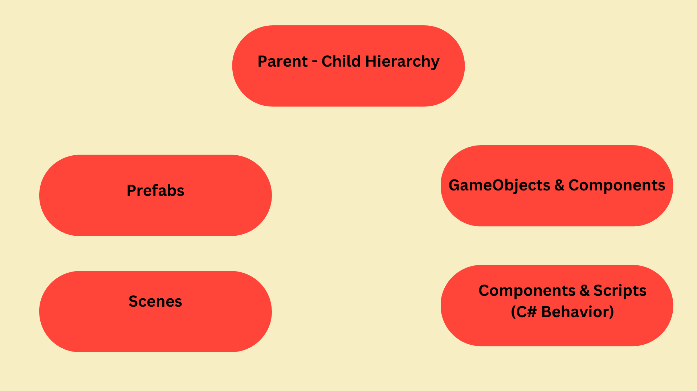

Core Concepts Overview
Get Help
These are 5 core concepts in Unity development.

Core Concepts:
Parent - Child Hierarchy
This is how Unity organizes objects in the scene.
- Parent: A parent controls the position, rotation, and scale of its children.
- Child: Moving a parent moves all children.
- Hierarchy: Useful for: characters holding weapons, UI layouts, cameras attached to players.
GameObjects & Components
Unity’s core architecture.
- GameObjects = containers
- Components = behavior (scripts, physics, visuals, audio)
- Everything you see or interact with is built from this system.
Prefabs
Reusable templates for GameObjects.
- Create once → reuse anywhere.
- Perfect for enemies, bullets, UI elements, power-ups.
- Lets you update all copies by editing the prefab.
Scenes
Unity’s way of organizing different parts of your game.
- Each scene is like a level or screen.
- You can load scenes additively or replace the current one.
- Used for menus, levels, cutscenes, etc.
Components & Scripts (C# Behavior)
This is where your game logic lives.
You write C# scripts that become components.
Scripts control movement, health, AI, input, animations, etc.
There are 2 types of scripts in Unity: MonoBehaviour and ScriptableObject. Think of ScriptableObjects as reusable data files.
Unity calls built‑in methods like Start(), Update(), and OnCollisionEnter().
These methods are automatically invoked by Unity's engine during the game lifecycle.